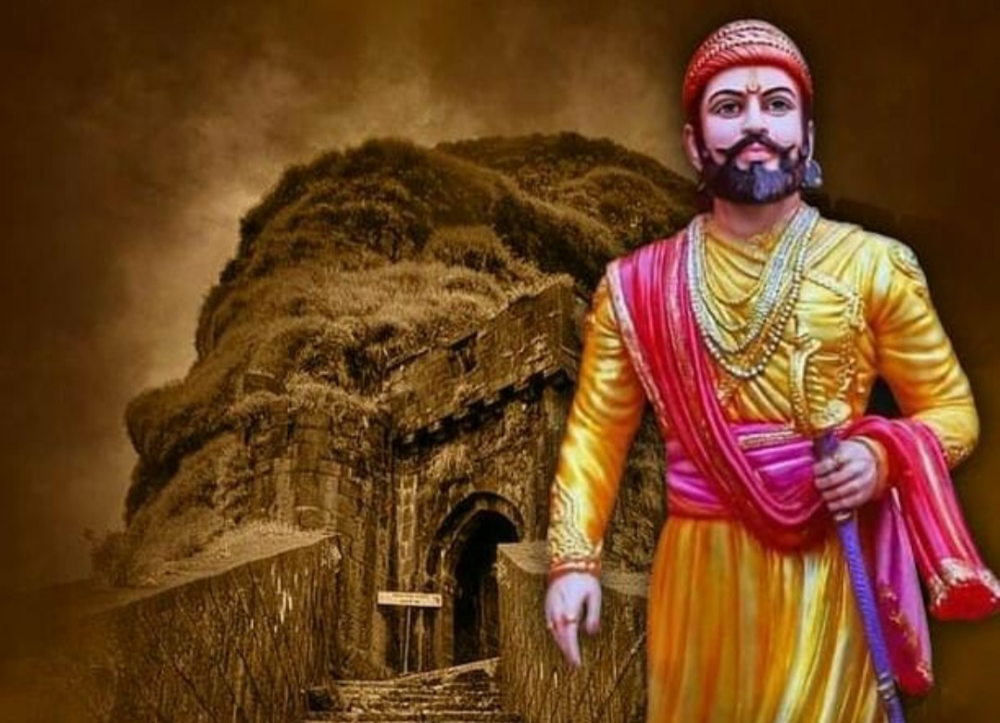

शिवाजी महाराजांचा जन्म भोसले कुळात झाला. या घराण्याचा मूळ पुरुष सुजनसिंह हा उदयपूरच्या शिसोदे राजघराण्यातील असून तो सन १३३४ च्या सुमारास आपले भाग्य अजमाविण्यासाठी उत्तरेतून दक्षिणेत उतरला व बहामनी घराण्याचा मूळ पुरुष हसनगंगू याच्या पदरी त्याने चाकरी पत्करली. हसनगंगूचा पाडाव करण्यासाठी बादशहा महंमद तुघलक याने सन १३४६ मध्ये दक्षिणेत स्वारी केली. त्या दोघांमध्ये झालेल्या संग्रामात सुजनसिंह व त्याचा मुलगा दिलीपसिंह यांनी मोठा पराक्रम केला. सन १३४७ मध्ये हसनगंगूने अल्लाउद्दीन बहमन हे नाव धारण करून गुलबर्गा येथे बहामनी राज्याची स्थापना केली. तेव्हा त्याने सुजनसिंहास देवगिरी प्रांतातील १० गावे जहागीर देऊन मोठी सरदारी दिली. पुढे बहामनी राज्यात सुजनसिंहाच्या कुटुंबाचा उत्कर्ष होत गेला. सन १३५५ मध्ये सुजनसिंहाचा मृत्यू झाला, दिलीपसिंह कुटुंबप्रमुख बनला.
दिलीपसिंहाचा पुत्र सिद्धजी हा कर्तबगार होता. त्याने बहामनी सत्तेच्या रक्षणार्थ प्राण खर्ची घातले. त्यांचा पुत्र भेरवसिंह ऊर्फ भोसाजी यांच्या पिढीपासून या घराण्यात “भोसले” हे उपनाव रूढ झाले. भोसाजीचे वंशज ते भोसले. राणाकर्णसिंह आणि शुभकृष्णसिंह हे भोसाजीचे पणतू. शुभकृष्णाचे वंशज बाबाजी भोसले हे निजामशाहीत नोकरीस होते. त्यांना निजामशाहीकडून परगणे पांडे पेडगावची जहागिरी मिळाली होती. मालोजी व विठोजी हे बाबाजींचे पुत्र.
मालोजींनी आपल्या पराक्रमाने निजामशाहीत "राजा" ही पदवी व पंचहजारी मनसब मिळवली. सैन्याच्या खर्चासाठी त्यांना पुणे, सुपे, चाकण चौऱ्यांशी व इंदापूरची देशमुखी व कुटुंब ठेवण्यासाठी शिवनेरीचा किल्ला सन्मानाने देण्यात आला (सुमारे सन १५९०). मालोजींना शहाजी व शरीफजी असे दोन पुत्र होते. शहाजीराजे हे छत्रपती शिवरायांचे वडील होत.